Nyzo version 561 (commit on GitHub) adds API endpoints to the client.
This version affects the behavior of the client only.
In BlacklistManager, all code related to iptables was removed. This code has been inactive and mostly commented out since version 511. In the performMaintenance() method, when removing in-cycle verifiers from blacklist, the check for IP address membership in blacklistedAddresses is no longer necessary. It was only performed before due to the significant overhead of running the iptables process.
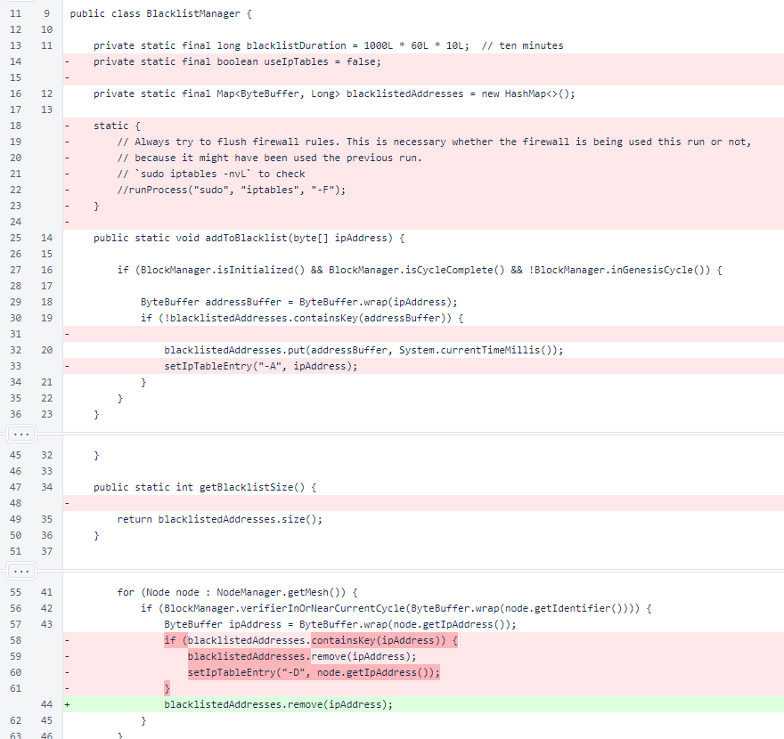Later in the BlacklistManager.performMaintenance() method, the call to the setIpTableEntry() method for expired addresses was eliminated. The setIpTableEntry() method was also deleted.

In the Client console loop, a new ExecutionResult object is returned when running a command. If this result is not null, it is printed to the console. In the previous version, all output of a command was written directly to a CommandOutput object. In the future, the CommandOutput object will only be used to provide feedback while a command is running, and final results, errors, and other messages will all be passed back in the ExecutionResult. Some commands have been modified for this new design, and the remaining commands will be modified in upcoming versions.
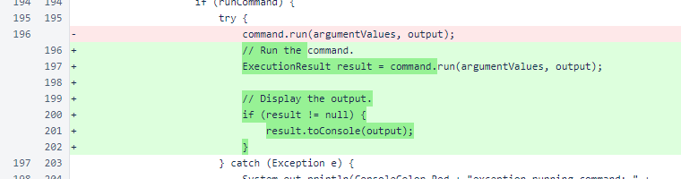In ClientController.buildEndpointMap(), a preference now allows activation and deactivation of the web endpoints. Also, the ExitCommand is now excluded. On a publicly accessible server, this command could be activated maliciously to cause the server to terminate.
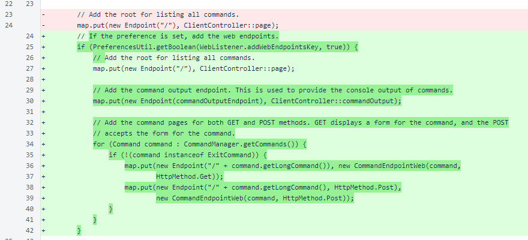Also in ClientController.buildEndpointMap(), API endpoints are now added. A preference controls their activation, as well. In this version, long-running commands are excluded. API endpoints for long-running commands will be added in a future version. They cannot send immediate responses, so a mechanism will be implemented to allow status updates and command results to be retrieved based on task identifiers.

The CommandEndpointApi class encapsulates the behavior for API endpoints. It implements the EndpointResponseProvider interface, running its command and returning a JSON representation of the command's result.
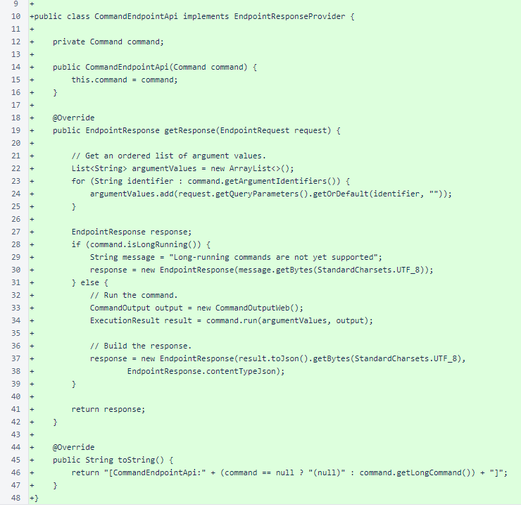CommandEndpoint was renamed to CommandEndpointWeb to distinguish it from CommandEndpointApi.
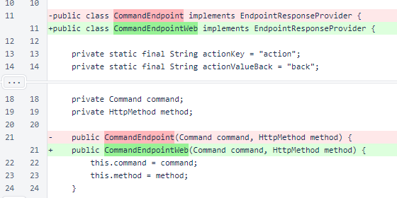In CommandEndpointWeb, uses of normalizedArgumentName() were replaced with the argument identifiers provided by the command. This does not change the behavior of the pages, but it does make the rendered pages slightly easier to read and more consistent with the API endpoints.

In CommandEndpointWeb.getProgressPage(), the ExecutionResult is received and printed to the CommandOutput. This is a temporary solution — the ExecutionResult.toHtml() method will be implemented and used in future versions.
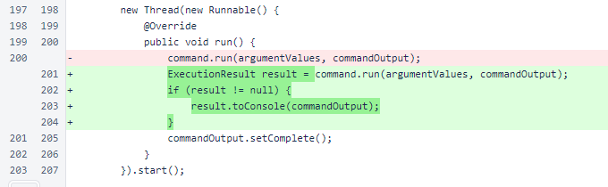The CommandEndpointWeb.normalizedArgumentName() method was deleted. It is no longer needed. Also, the toString() method has been updated with the new class name.
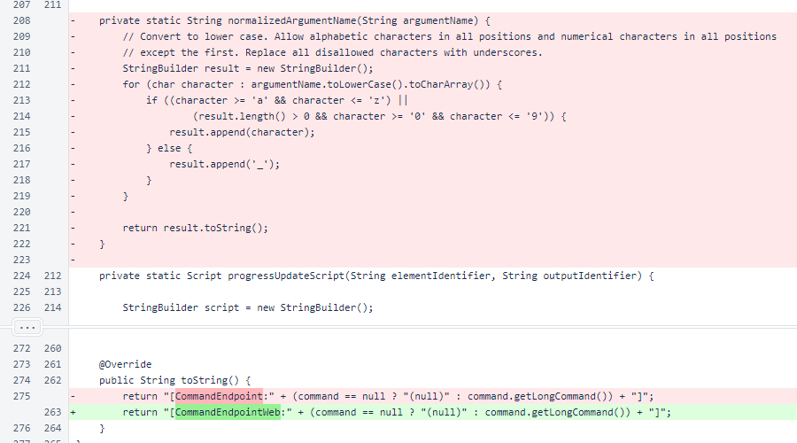The CommandTable class provides a simple structure for tabular output data. The invertedRowsColumns option allows headers to be displayed on the left side of the table instead of the top of the table.
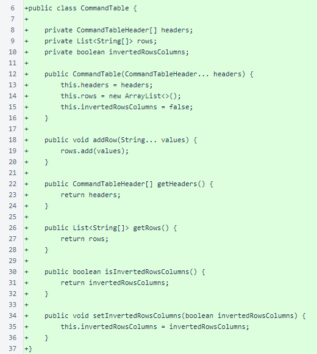The CommandTableHeader class structures headers for the CommandTable, providing a label for display and an identifier for API responses.

In ConsoleUtil, a new overload of printTable() accepts a CommandTable as a data source.
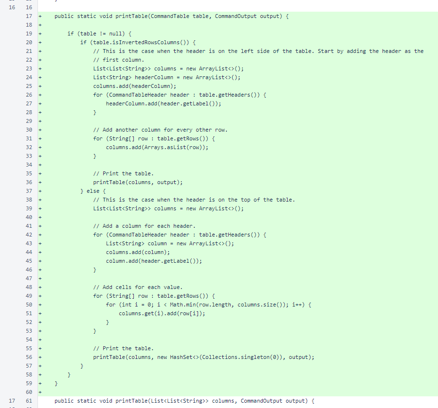ConsoleUtil.printMessages() is used to display the notices and errors produced by commands.
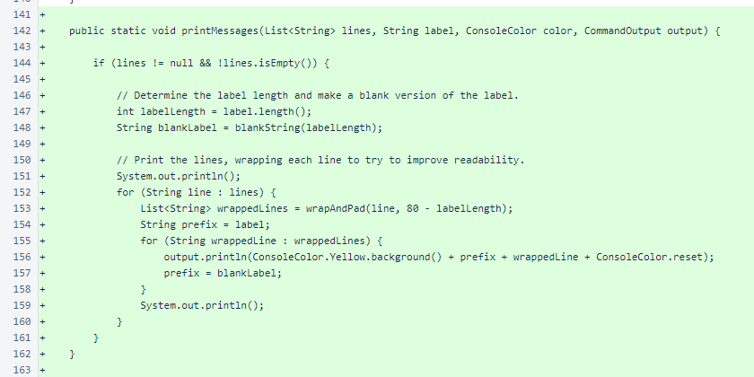ConsoleUtil.wrapAndPad() wraps a single message to a specified width, padding all resultant lines to the same width. This is a helper method used by ConsoleUtil.printMessages() to produce consistent, compact message blocks.
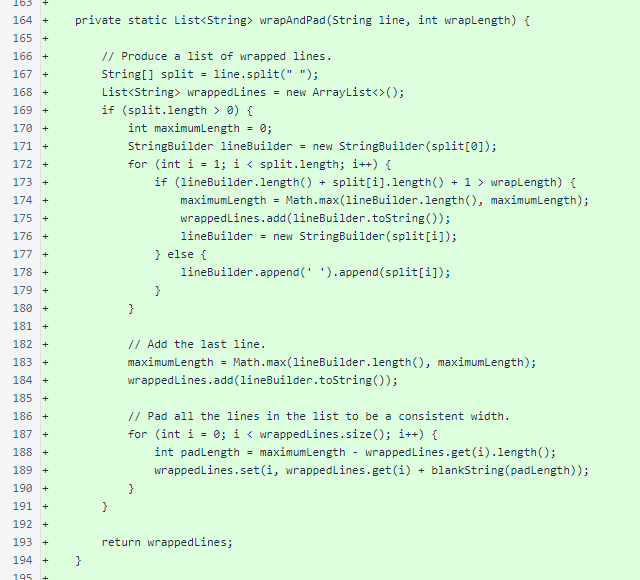ConsoleUtil.blankString() is used by printMessages() and wrapAndPad() to succinctly produce strings of a specified lengths containing only spaces.
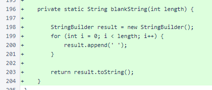The ExecutionResult interface is used to present the results of running a Command. It contains three method declarations: one for the API, one for the web UI, and one for the console UI.
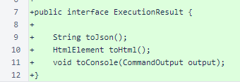SimpleExecutionResult is a general-purpose container for command results. It allows storage of a CommandTable, a list of errors, and a list of notices. It already provides proper implementations of toJson() and toConsole(). The toHtml() method currently returns null — this will receive a proper implementation and be utilized in a future version. In this version, the toConsole() method is used to provide all feedback in the web UI.
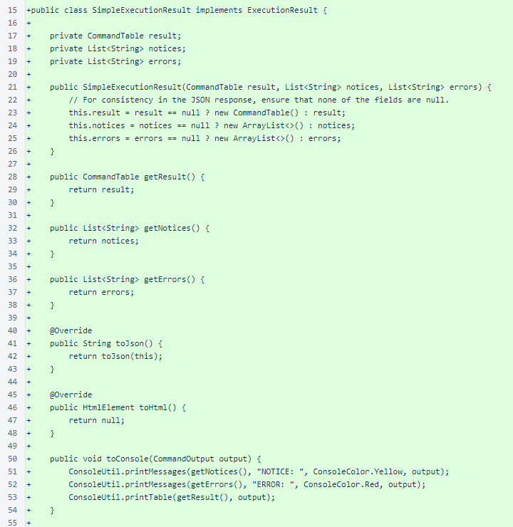The static SimpleExecutionResult.toJson() method provides sufficient JSON serialization capabilities for this class.

The jsonForCollection(), jsonForArray(), and jsonForCommandTable() methods assist in JSON serialization. The jsonForCommandTable() method renders the table as an array of objects, using the table header identifiers as the object property names for each object.
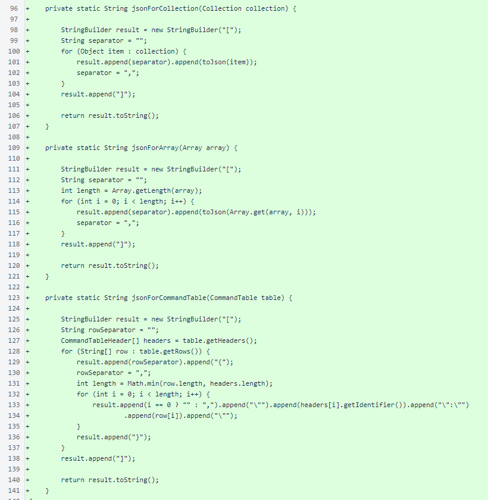The BalanceDisplayCommand is not a long-running command, so it was modified to produce an ExecutionResult for use in an API endpoint. The table that was printed directly to the CommandOutput was replaced with a CommandTable. Messages that were printed directly to the CommandOutput are now added to the appropriate message lists.
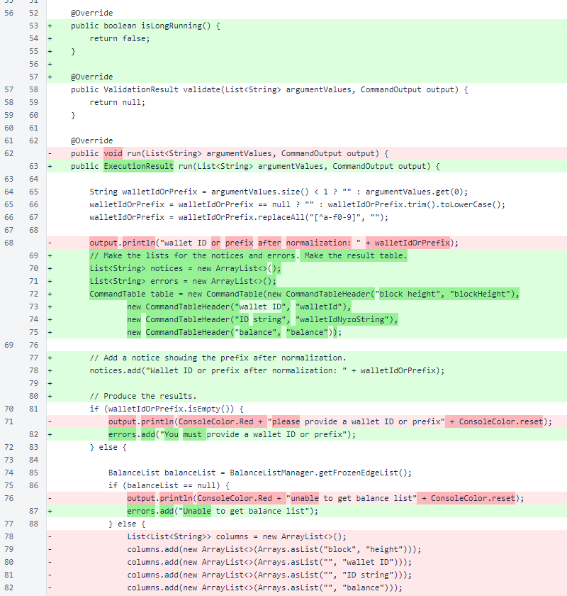Each account is added as a row in the BalaceDisplayCommand output table. If no accounts matching the specified prefix are found, a notice is added.
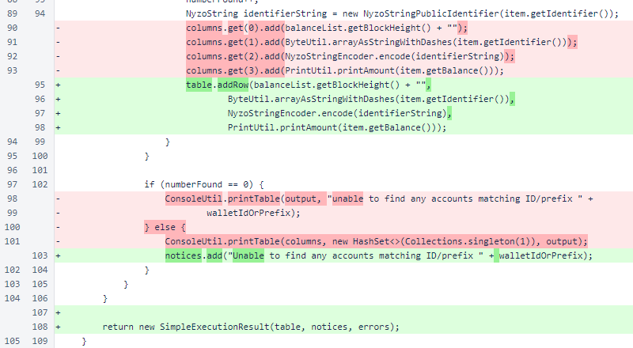A client system is now running at http://client.nyzo.co. The long command name for the BalanceDisplayCommand is balance, and the argument identifier is walletId. So, to retrieve the balance for all accounts starting with aa88, the API request is http://client.nyzo.co/api/balance?walletId=aa88.
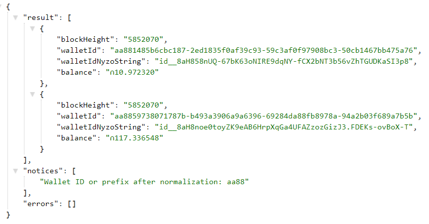The Command interface now has the isLongRunning() method to indicate which commands are unable to return results immediately. The run() method now returns an ExecutionResult.
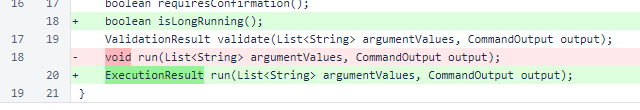CycleTransactionListCommand is long-running because it has an option for retrieving transactions from a verifier. It is not yet implemented as an API endpoint.
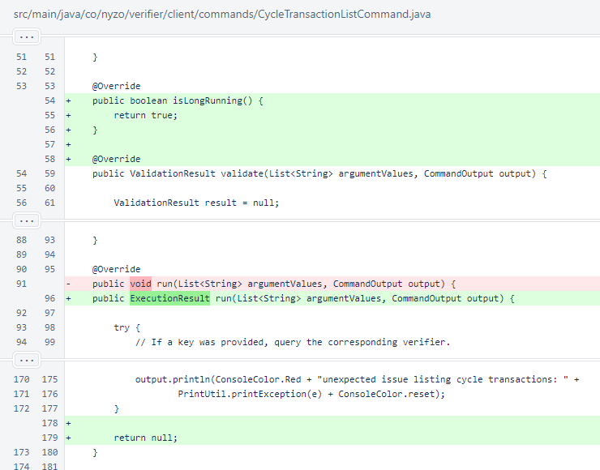CycleTransactionSendCommand is long-running because it sends a cycle transaction to every in-cycle verifier. It is not yet implemented as an API endpoint.
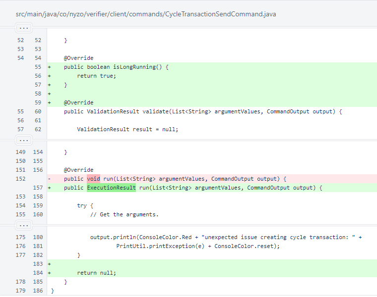CycleTransactionSignCommand is long-running because it sends a cycle transaction signature to every in-cycle verifier. It is not yet implemented as an API endpoint.
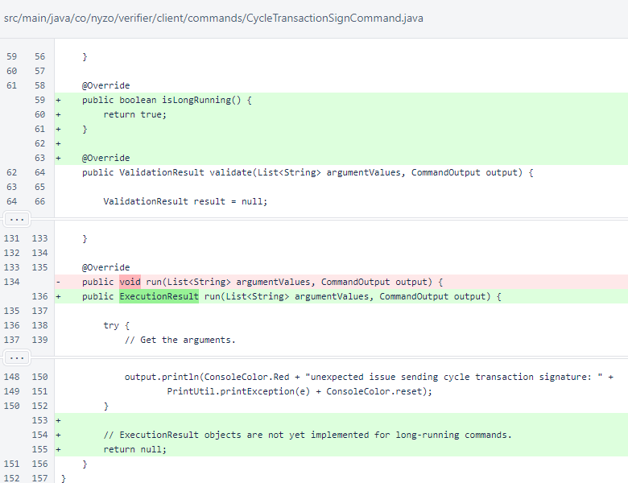EmptyCommand is a placeholder used for the console mode of the client. It does not need to be implemented as an API endpoint.
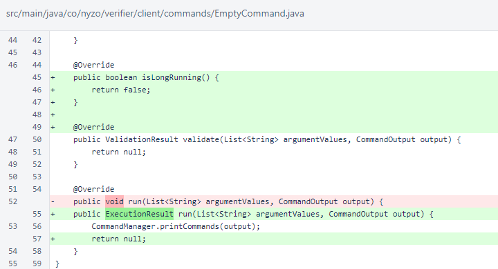ExitCommand terminates the client. It is only available from the console mode.
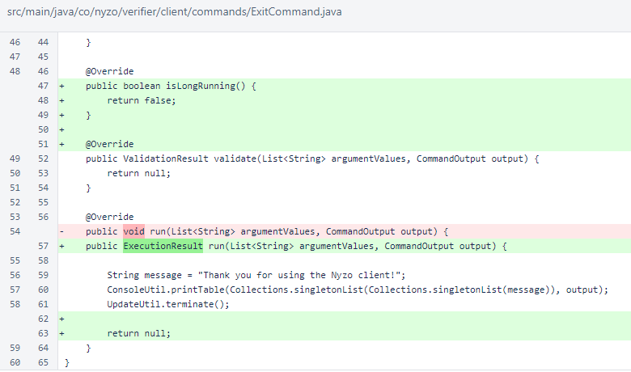InvalidCommand is another placeholder used, when an invalid command is typed, by the console mode only.
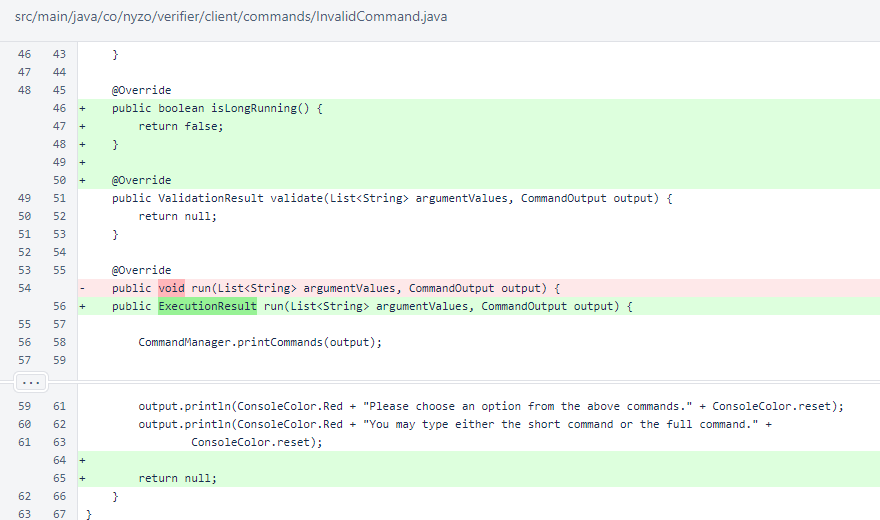NttpDataGenerateCommand requires no communication with the mesh, so it runs quickly. The NTTP number and Git hash are echoed in the response, and the generated sender data is provided as a normalized sender-data string.
The command flow for the API endpoints does not yet use the validation flow for commands that require validation. So error reporting is often imprecise. For example, this command will respond with "An unexpected error occurred while running this command" if an NTTP number is not provided.
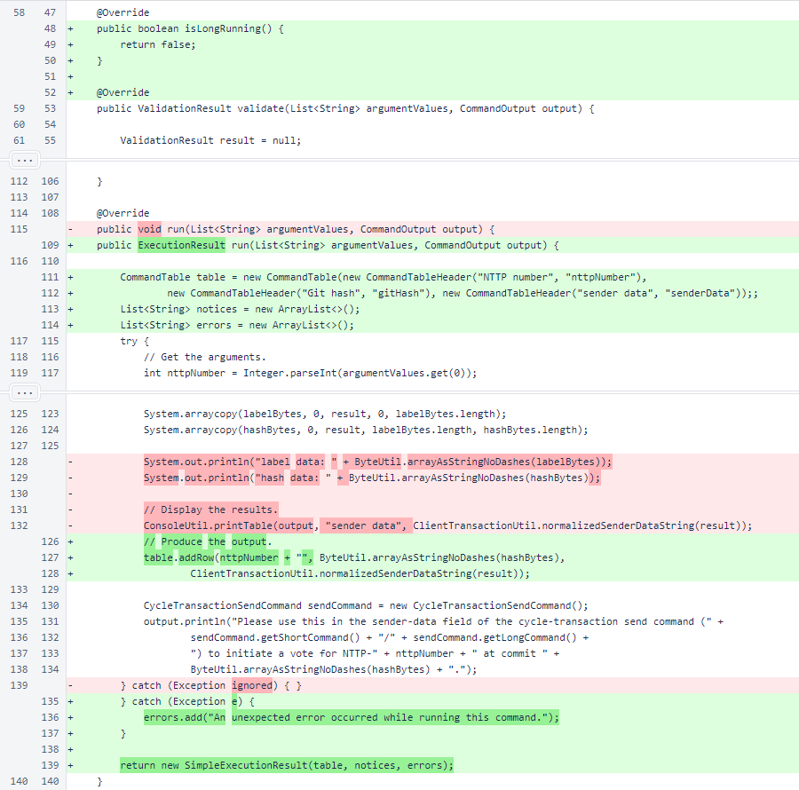PrefilledDataCreateCommand also runs with no delay. A notice is added if the account is not found in the latest-available balance list, as this may be a sign of an incorrect receiver identifier.
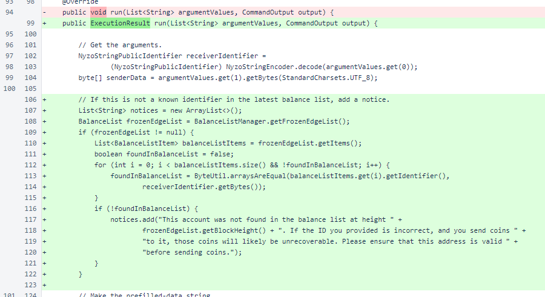The result of PrefilledDataCreateCommand echoes back the receiver identifier and the sender data. The prefilled-data string is provided as a Nyzo string.
This command currently supports only text strings for sender data. It will be updated in a future version to support raw byte sender data using normalized sender-data strings.
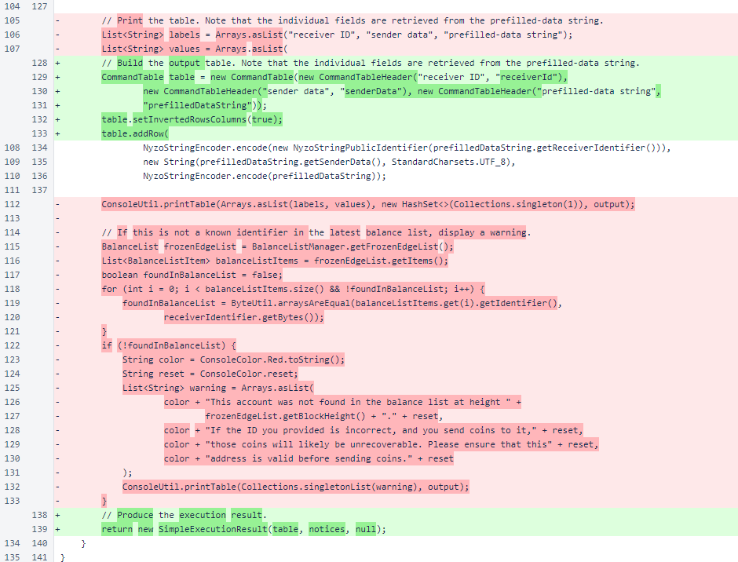PrefilledDataSendCommand also requires mesh communication, so it is not yet implemented as an API endpoint.
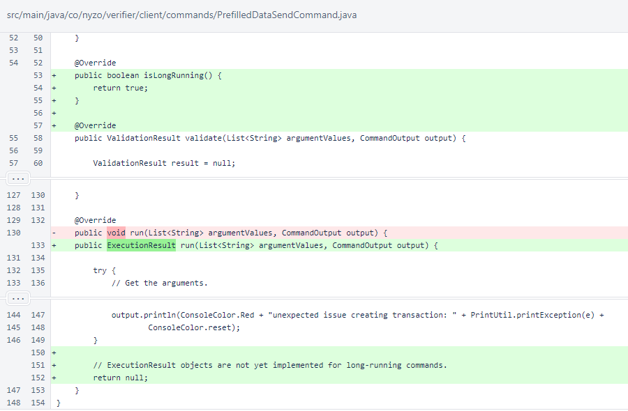PrivateNyzoStringCommand runs locally, requiring no mesh communication. The result includes raw bytes and Nyzo strings for both the private seed and public identifier.

PublicNyzoStringCommand also runs locally. Its description was corrected.
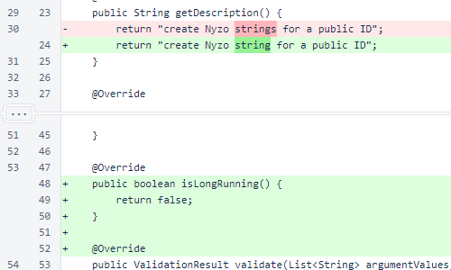PublicNyzoStringCommand produces a notice if the recipient was not found in the balance list.
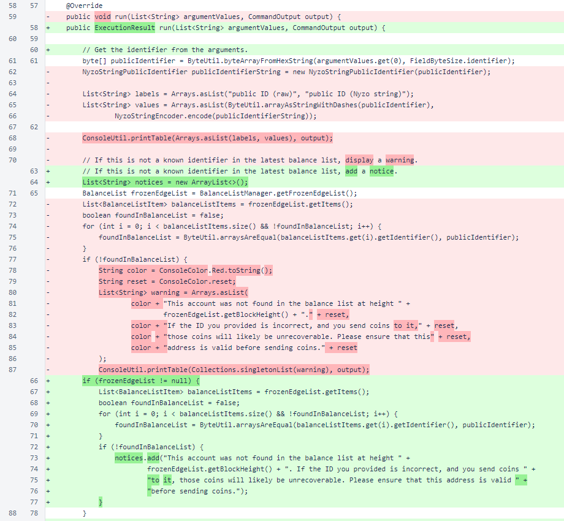PublicNyzoStringCommand returns the raw bytes and the Nyzo string of the public identifier.
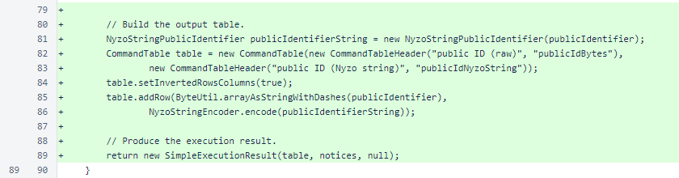TransactionSendCommand is long-running, so it is not yet implemented for the API.
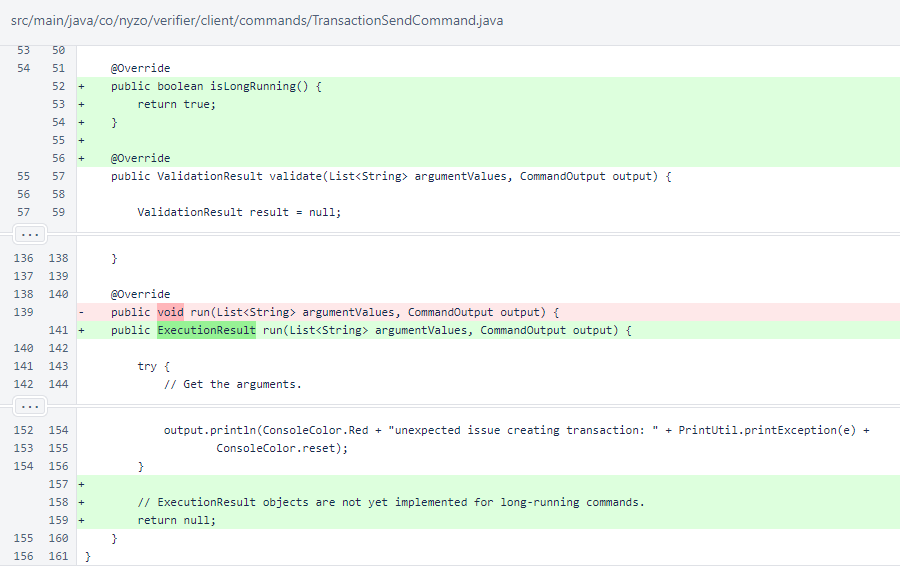A content-type constant for JSON was added to EndpointResponse.
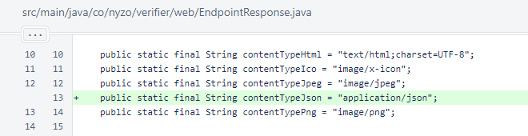The WebListener class contains two new keys for preferences: add_web_endpoints and add_api_endpoints. Both active by default, these allow a server to be configured to provide only web functionality, only API functionality, or both.
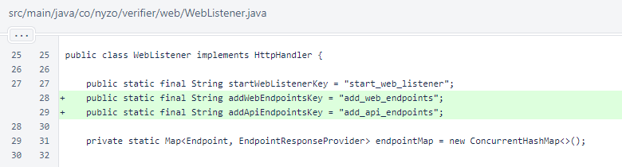